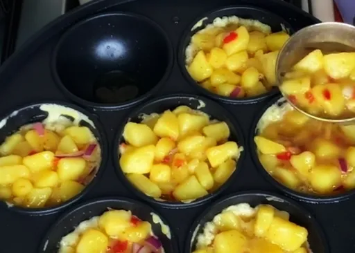
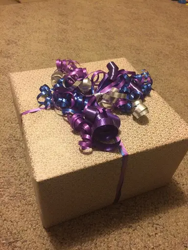
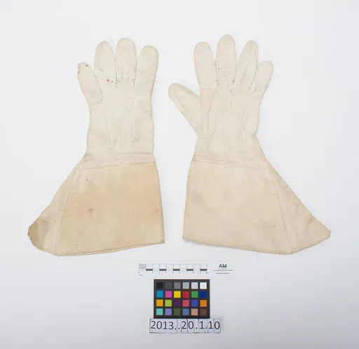

Reject an image by adding its slug to public/charades/charades-easy/reject.txt (append ! to keep it word-only), then re-run node scripts/genimages.mjs.
Football football Public domain · Karim Allawi Homaidi · source
French fries french-fries CC0 · StockSnap · source

Frying pan frying-pan CC BY-SA 4.0 · Hajjare · source

Gift gift CC BY-SA 4.0 · Loneshieling · sourceGiggling giggling CC0 · Malcolmxl5 · sourceGlasses glasses Public domain · Post of Indonesia · sourceGlobe globe CC BY-SA 4.0 · Dietmar Rabich · source

Gloves gloves CC BY 4.0 · Unknown authorUnknown author · sourceGoggles goggles CC BY 3.0 · Joe Schneid, Louisville, Kentucky · source